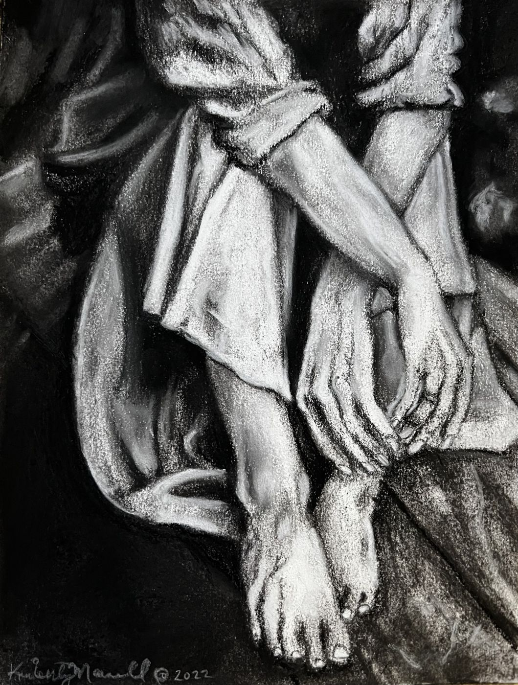
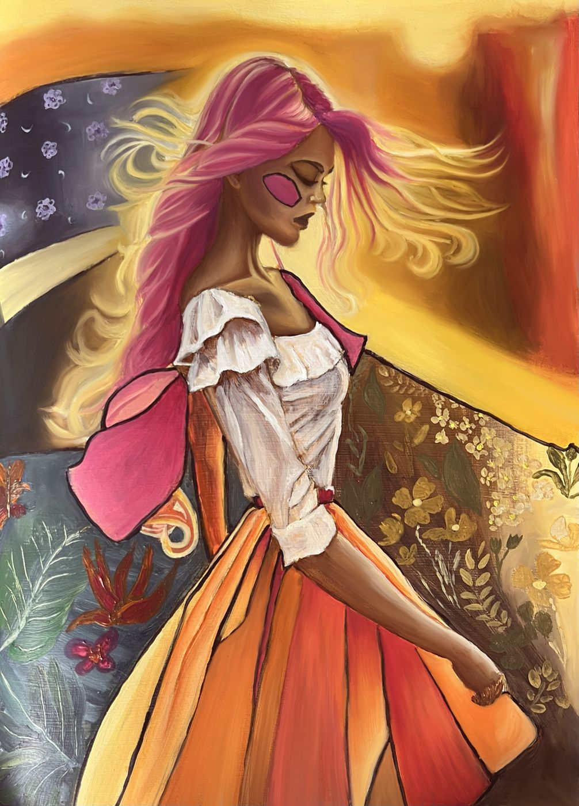
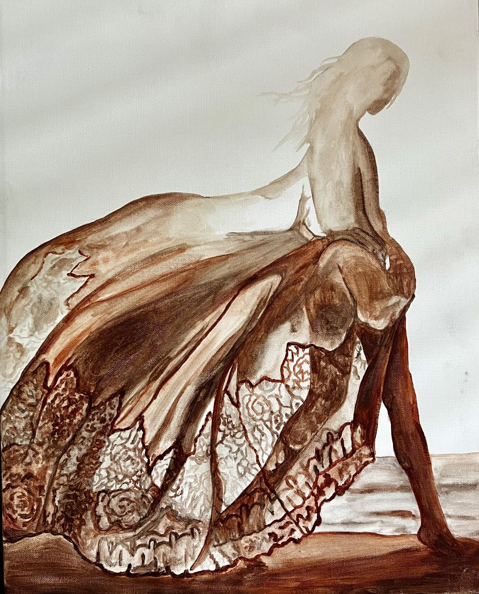
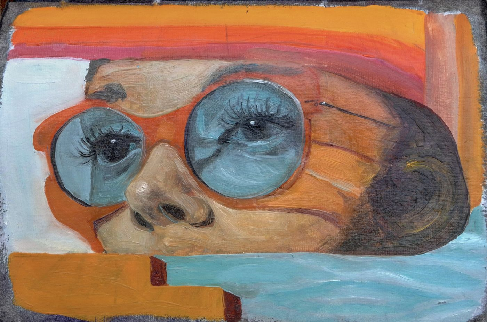

The Comfort of Frosting
Oil on canvas
18 × 24 in · 2023
$2,600
View paintingOriginal art · Direct from the artist
Expressive figures, botanical forms and the California coast. Find an original to live with, or commission a painting around your own story and space.
Created by Kimberly Marnell in Irvine, California.
 Queen of the Night · Original mixed media · $2,600
Queen of the Night · Original mixed media · $2,600Every original that is available now. Open any painting to see it large, in a room, up close and to scale before you buy.
Indulgence and excess, painted with a wink: frosting, confections and the cost of having everything.
Oil on canvas
18 × 24 in · 2023
$2,600
View painting
Watercolor on paper
18 × 24 in · 2024
$2,600
View painting
Acrylic on linen, hand-built side table
20 × 16 × 16 in · 2025
$5,000
View painting
Gouache on paper
18 × 24 in · 2025
$2,600
View paintingAcrylic on canvas
11 × 14 in · 2025
$2,000
View paintingFlowers that bloom at night recur through this series: growth that needs no audience and no ideal conditions, something that develops quietly in the dark and opens when the time is right.

Oil on canvas
36 × 48 in · 2026
$10,400
View paintingWatercolor, acrylic marker and ink
24 × 18 in · 2026
$2,600
View paintingGrayscale oil and charcoal studies of the body and face, where a single bloom or a fold of skin carries the whole composition.

Oil on canvas
24 × 18 in · 2023
Price on request
View painting
Oil on canvas
14 × 11 in · 2023
$1,500
View painting
Oil on paper
11 × 8 in · 2023
$1,500
View painting
Charcoal on cotton paper
24 × 18 in · 2022
$2,600
View painting
Charcoal on paper
11 × 8 in · 2023
$1,500
View paintingWind, sun and salt air: color-drenched portraits and figures from the Southern California coast.

Oil on canvas
24 × 18 in · 2024
$2,600
View painting
Watercolor
24 × 18 in · 2023
$2,600
View painting
Acrylic on paper
24 × 18 in · 2022
$2,600
View paintingWatercolor
7 × 15 in · 2024
$1,500
View painting
Oil on canvas
6 × 10 in · 2024
$1,500
View paintingChoose your subject, size and palette online. Kimberly follows up when more details are needed.
For your home or a meaningful gift
Bring a person, place, flowers or an idea into an original painting. Start with guided choices and see your artwork price as you plan.
Choose your commissionIf you have a holiday date in mind, ask Kimberly to confirm timing before booking.
For interior designers
Choose the size, style and colors for your project. Share textile swatches and color references so the artwork can coordinate with your design.
Plan art for your project10% off published commission rates for eligible professionals. Book with a 50% artwork deposit or full artwork payment. Extras may apply.
Ask about a painting, discuss placement, or share what you have in mind for a commission.
Email Kimberly